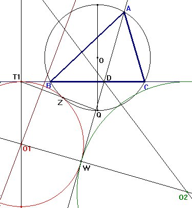
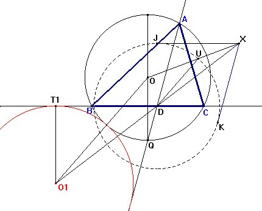
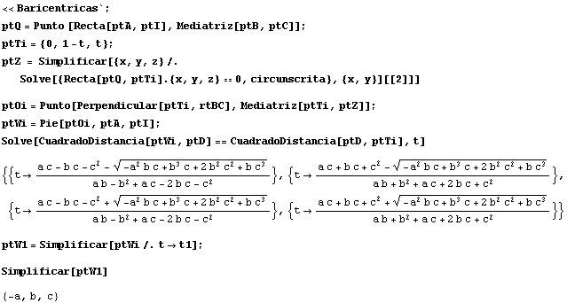
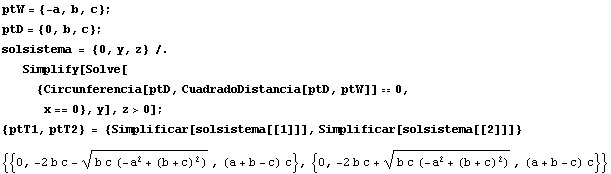
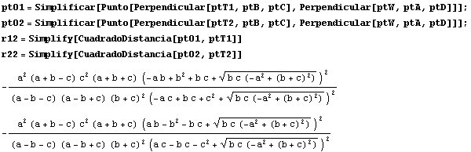
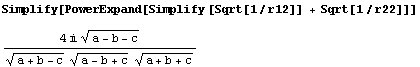
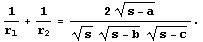
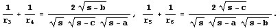
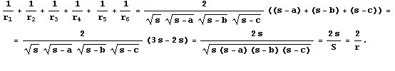

|
Trazamos dos circulos (O1,r1) y (O2,r2) tangentes externamente entre si, y a su vez tangentes a BC y al circuncirculo (O) del triángulo ABC externamente, de tal forma que la tangente común interna de (O1) y (O2) pase por A. Además (O1) y (O2) se encuentran del lado opuesto a A con respeto a BC. De manera similar trazamos los circulos (O3, r3) y (O4,r4) tangentes a AC y (O) con su tangente común interna que pase por B y los circulos (O5,r5) y (O6,r6) tangentes a AB y (O) con su tangente común interna que pase por C. Demostrar que: 1/r1+1/r2+1/r3+1/r4+1/r5+1/r6 = 2/r, Donde r = inradio de ABC. |
|
Propuesto por Juan Carlos Salazar. |
Solución parcial de Francisco Javier García Capitán
Trazado preliminar de la figura con Cabri

Como las hipótesis sobre tangencias son abundantes, liberémonos para empezar de alguna de ellas. Consideremos un punto cualquiera T1 sobre la recta BC (concretamente a la izquierda de B, como en la figura), y supongamos que ése es el punto de tangencia con la circunferencia (O1) (esto no será así, puesto que hemos elegido a T1 de forma arbitraria, pero servirá para comenzar).
A partir de T1, podemos obtener el centro O1 de la circunferencia tangente a BC en T1 y tangente a la circunferencia circunscrita. Para ello,
Ahora, la recta tangente desde A a la circunferencia (O1) deberá ser la tangente común a (O1) y (O2), y el mismo punto W servirá para las dos rectas. Llamemos D al punto de intersección de la recta tangente con BC. El centro O2 deberá estar en la intersección de la recta O1W y la bisectriz del ángulo WDC.
Moviendo T1 sobre la recta BC hasta conseguir que la circunferencia (O2) sea tangente a la circunferencia circunscrita, observaremos que ello parece siempre ocurrir cuando
| Conjetura 1 |
| La recta AD es la bisectriz interior del ángulo A |
Recordemos que ello equivale a que AD pase por Q.
Trazado de la figura con Cabri
Vamos a aprovechar la propiedad que hemos descubierto para trazar con exactitud la figura del enunciado del problema. Comenzamos en este caso por trazar la bisectriz interior AD del ángulo A, y ahora trazaremos una circunferencia que sea tangente a BC, AD y la circunferencia circunscrita.

Para hallar la circunferencia (O2) procederíamos de la misma forma, aunque es más fácil trazar una perpendicular por O1 a AD, y hallar su intersección con la perpendicular a XD (XD y su perpendicular son bisectrices del ángulo ADC).
Estudio con Cabri
Una vez realizada la construcción con Cabri, podemos mover el vértice A, comprobando que se cumple perfectamente la propiedad que hemos visto antes (la recta AD es la bisectriz interior del ángulo A). Además también podemos observar que
Algo de Mathematica
Unos cálculos con Mathematica siguiendo la primera construcción
 |
nos llevan a que
| Conjetura 2 |
| El punto de tangencia W es el excentro correspondiente al vértice A |
Vuelta a Cabri
La localización del punto W es demoledora: ahora la construcción es extremadamente sencilla.
Más Mathematica
Usemos Mathematica de nuevo para descubrir alguna relación más.
En primer lugar, hallamos las coordenadas de los puntos de tangencia T1 y T2. Para ello, hallamos la intersección de la circunfernecia con centro D y radio DW con la recta BC.

Ahora hallamos las coordenadas de los centros (O1) y (O2), y los cuadrados de los radios r1 y r2.

Con esto podemos hallar el valor de la suma 1/r1+1/r2 :

El resultado lo expresamos así:

De forma parecida tendremos las igualdades:

Sumando las tres fórmulas, obtenemos el resultado propuesto.

En la última parte hemos usado dos de las fórmulas conocidas del área S del triángulo ABC.